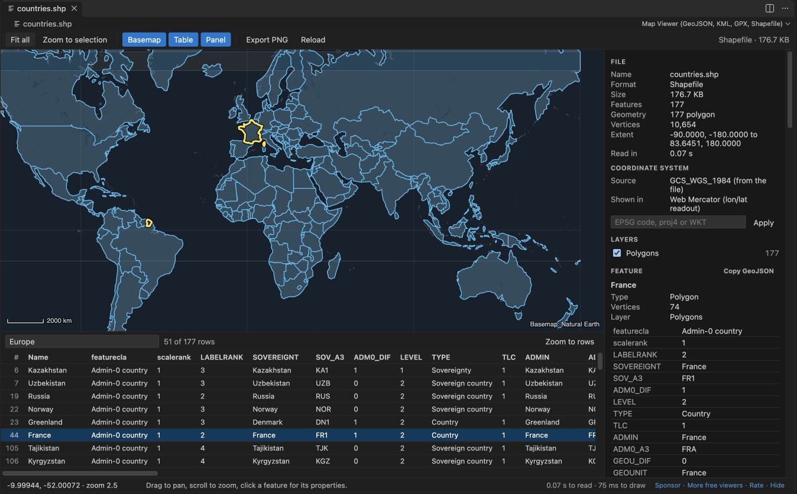
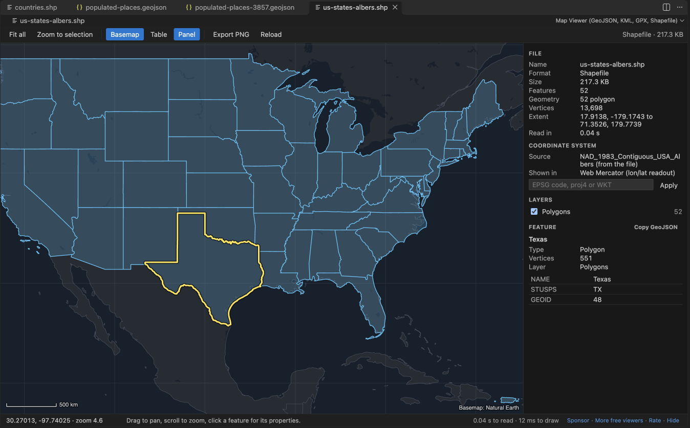
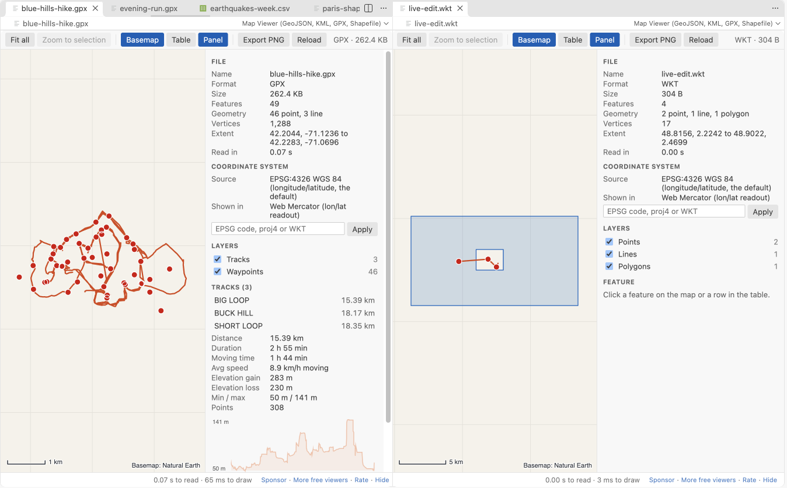

GeoJSON Viewer, KML Viewer & GPX Viewer (Map Preview, Shapefile)
GeoJSON Viewer, KML Viewer & GPX Viewer (Map Preview, Shapefile), a VS Code extension by Zovo
See GeoJSON, KML, KMZ, GPX, shapefiles, TopoJSON, WKT and CSV files on a map inside VS Code. Free, no sign-in, works offline: the basemap ships with the extension and nothing is fetched from the internet.
Free, MIT license. Needs VS Code 1.90.0 or newer. Extension ID zovo.zovo-geo-map-viewer, version 0.2.1.


- Click a feature to see its properties. Open the attribute table, filter it, click a row to zoom there.
- GPX tracks show distance, duration, moving time, elevation gain and an elevation profile.
- Shapefiles are reprojected from their
.prjfile (UTM, State Plane, Lambert, Albers and more). - 100 MB files open in a few seconds. Parsing and drawing run in a background worker, so VS Code stays responsive.
- Works in Remote SSH, WSL, Dev Containers and Codespaces: files are read through VS Code, not from a local path.
- Export the current view as a PNG image. Dark and light themes follow VS Code.
Questions people ask
Is GeoJSON Viewer, KML Viewer & GPX Viewer (Map Preview, Shapefile) free?
Yes. GeoJSON Viewer, KML Viewer & GPX Viewer (Map Preview, Shapefile) is free and MIT licensed.
How do I install GeoJSON Viewer, KML Viewer & GPX Viewer (Map Preview, Shapefile)?
Click "Install in VS Code" above, or search for zovo.zovo-geo-map-viewer in the Extensions view.
Open a file
.gpx,.kmz,.shpand.topojsonopen on the map when you click them..geojson,.kmland.wktopen as text, because people edit them. Click the map button in the editor title bar to open the map beside the text. The map redraws while you type.- Right-click any supported file in the Explorer and pick Open in Map Viewer. This also works for
.json(GeoJSON or TopoJSON),.csvand.tsvwith latitude and longitude columns, and.zipfiles that hold a shapefile. - To always open GeoJSON on the map, add
"workbench.editorAssociations": { "*.geojson": "geoMapViewer.mapOption" }to your settings.
What you get
| Map | Offline basemap (Natural Earth 1:50m countries and lakes), graticule, scale bar, drag to pan, scroll to zoom, latitude and longitude under the cursor (click to copy) |
|---|---|
| Features | Click for properties, outline of the selection, Copy GeoJSON of one feature, Fit all, Zoom to selection |
| Table | Every feature with its attributes, a filter box that searches all values, Zoom to rows, click a row to zoom to it |
| Layers | KML folders, TopoJSON objects, GPX tracks and waypoints, or geometry types; tick boxes to hide or show |
| Styles | SimpleStyle properties (stroke, stroke-width, fill, fill-opacity, marker-color, marker-size) and KML styles |
| GPX | Distance, duration, moving time (above 1 km/h), average moving speed, elevation gain and loss, lowest and highest point, elevation profile, waypoint names |
| Coordinate systems | .prj files, the GeoJSON crs member (for example EPSG:3857), EPSG codes typed in the panel (UTM zones, British National Grid, Lambert-93, RD New, LAEA Europe, Conus Albers, NZTM, LV95 and others), or any proj4 string or WKT. Raw Web Mercator numbers without a crs are detected. |
| Export | PNG of the current view through a save dialog |
GPX numbers were checked against gpxpy 1.6.2 on a 3-track hike: distance within 0.11%, duration and moving time equal.


Formats
| Format | Extensions | Notes |
|---|---|---|
| GeoJSON | .geojson, .geo.json, .json | FeatureCollection, Feature, bare geometries, newline-delimited GeoJSON, NaN values read as empty |
| TopoJSON | .topojson, .json | One layer per object |
| KML and KMZ | .kml, .kmz | Folders, styles, MultiGeometry, gx:Track, ground overlay outlines |
| GPX | .gpx | Tracks, routes, waypoints |
| Shapefile | .shp with .dbf, .prj, .cpg next to it; .zip | Points, lines, polygons with holes, Z and M values, attribute encodings from .cpg |
| WKT | .wkt | One geometry per line, EWKT SRID=...; prefix |
| CSV and TSV | .csv, .tsv | Columns named lat/lon, latitude/longitude, y/x and similar, or a WKT column |
Large files
The file is parsed and packed into typed arrays in a web worker, and the map is drawn on an offscreen canvas. Features smaller than a pixel are drawn as dots and vertices closer than a pixel are skipped, so drawing time follows the screen, not the file. In a test in VS Code 1.142, a 123 MB GeoJSON with 200,000 polygons and 4.1 million vertices showed on the map about 3 seconds after the click (2.9 and 3.1 s in two runs). The editor stayed usable while it loaded: its longest pause was 0.1 to 0.24 s.
Files above 512 MB show a message and are not read. Change the limit with geoMapViewer.maxFileMB.
Privacy and safety
- No network: the webview content security policy allows no remote address, and the basemap is a file inside the extension.
- KML NetworkLinks, remote icons and overlay images are never loaded. The panel tells you how many there were.
- XML entity declarations are removed before a KML or GPX is read, so an entity bomb cannot expand.
- KMZ and ZIP files are unpacked with a size and ratio guard. A zip bomb stops with a message after a fraction of a second.
- Broken coordinates (NaN, latitude beyond 90, text) are left out and counted. The rest of the file still draws.
- No telemetry, no account, no ads.
Settings
| Setting | Default | |
|---|---|---|
geoMapViewer.maxFileMB | 512 | Largest file to open |
geoMapViewer.basemap | true | Show the offline basemap |
geoMapViewer.livePreview | true | Redraw while you edit the text (files up to 20 MB) |
geoMapViewer.askForRating | true | Ask once or twice for a Marketplace rating, after a few files on different days |
geoMapViewer.showSupportLinks | true | Small Sponsor and More free viewers links in the status line |
Keyboard
Arrow keys pan, + and - zoom, 0 fits all features, F zooms to the selection, B toggles the basemap, T the table, P the panel, Esc clears the selection.
License
MIT. Bundled libraries and the basemap data are listed in THIRD-PARTY-NOTICES.md.
Guides
Install GeoJSON Viewer, KML Viewer & GPX Viewer (Map Preview, Shapefile)
Click the button to open VS Code and install it, or press Ctrl+P (Cmd+P on macOS) in VS Code and run ext install zovo.zovo-geo-map-viewer.
Free, MIT license. Needs VS Code 1.90.0 or newer. Extension ID zovo.zovo-geo-map-viewer, version 0.2.1.
Source code and issues are on GitHub.
Support this work
If this extension saves you time, you can support the work on GitHub Sponsors. Monthly tiers start at $5, and one-time tiers start at $15. Sponsorship is optional, and the tool works the same without it.
Need your format supported?
Open a format request with a sample file, and I reply there whether it can be done. For USD 299 once, through this GitHub Sponsors tier, I add your file format or a missing feature to this extension, with tests, within 7 days.